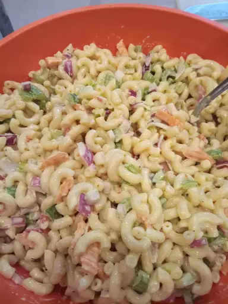

This macaroni salad always gets lots of compliments. It's an easy recipe to make and has a pleasing taste that everyone seems to love!
Bring a large pot of lightly salted water to a boil. Cook elbow macaroni in the boiling water, stirring occasionally, until tender yet firm to the bite, about 8 minutes. Rinse under cold water and drain.
Mix mayonnaise, sugar, vinegar, mustard, salt, and pepper together in a large bowl; stir in celery, onion, green pepper, carrot, pimentos, and macaroni.
Refrigerate salad for at least 4 hours before serving, but preferably overnight.